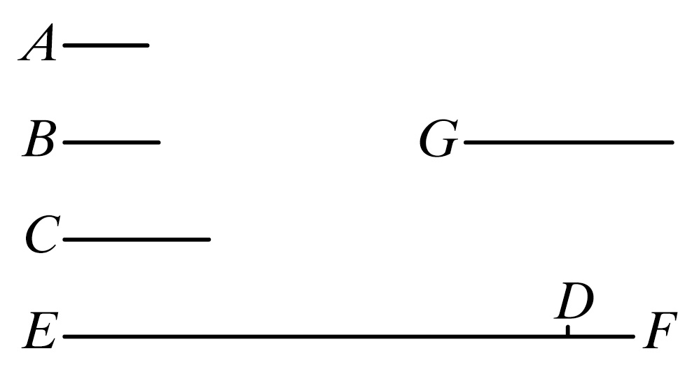
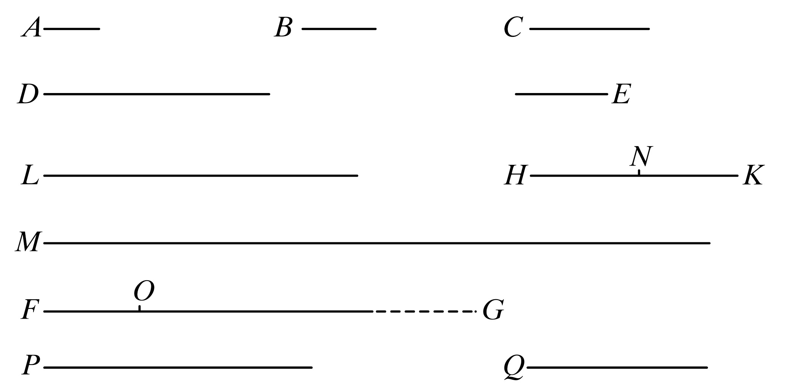

命题20 预先给定任意多个素数，则有比它们更多的素数．
设A，B，C是预先给定的素数，则可证有比A，B，C更多的素数．

为此，取能被A，B，C量尽的最小数，并设它为DE，再给DE加上单位DF.
那么EF或者是素数或者不是素数．
首先，设它是素数．
那么已找到多于A，B，C的素数A，B，C，EF.
其次，设EF不是素数，那么EF能被某个素数量尽． ［vii.31］
设它被素数G量尽．
则可证G与数A，B，C任何一个都不相同．
因为，如果可能，设它是这样．
现在A，B，C量尽DE，所以G也量尽DE.
但它也量尽EF.
所以，G作为一个数，将量尽其剩余的数，即量尽单位DF：这是不合理的．
所以，G与数A，B，C任何一个都不同．
又由假设它是素数．
所以已经找到了素数A，B，C，G，它们的个数多于预先给定的A，B，C的个数．
证完
命题36 设从单位起有一些连续二倍起来的连比例数，若所有数之和是素数，则这个和数与最后一个数的乘积将是一个完全数．
为此，设从单位起数A，B，C，D是连续二倍起来的连比例数，且所有的和是素数，设E等于其和，设E乘D得FG.
则可证FG是完全数．
对于无论多少个A，B，C，D，都设有同样多个数E，HK，L，M为从E开始连续二倍起来的连比例数，
于是，取首末比，A比D如同E比M. ［vii.14］
所以，E，D的乘积等于A，M的乘积． ［vii.19］

又E，D的乘积是FG，所以A，M的乘积也是FG.
由于A乘M得FG，所以依照A中单位数，M量尽FG.
又A是二，所以FG是M的二倍．
但是M，L，HK，E是彼此连续二倍起来的数，
所以E，HK，L，M，FG是连续二倍起来的连比例数．
现在，设从第二个HK和最后一个FG减去等于第一个E的数HN，FO，
所以，从第二个得的余数比第一个如同从最后一个数得的余数比最后一个数以前所有数之和． ［ix.35］
所以，NK比E如同OG比M，L，HK，E之和．
而NK等于E，所以OG等于M，L，HK，E之和．
但是FO也等于E，又E等于A，B，C，D与单位之和．
所以整体FG等于E，HK，L，M与A，B，C，D以及单位之和，且FG被它们所量尽．
也可以证明，除A，B，C，D，E，HK，L，M以及单位以外任何其他的数都量不尽FG.
因为，如果可能，可设某数P量尽FG.
且设P与数A，B，C，D，E，HK，L，M中任何一个都不相同．
又，不论P量尽FG有多少次，就设在Q中有多少个单位，于是Q乘P将得FG.
但是，还有E乘D也得FG.
所以，E比Q如同P比D. ［vii.19］
而且，由于A，B，C，D是由单位起的连比例数．（又A为素数），
所以除A，B，C外，任何其他的数量不尽D. ［ix.13］
又由假设，P不同于数A，B，C任何一个．
所以，P量不尽D.
但是P比D如同E比Q，
所以，E也量不尽Q. ［vii.定义20］
又，E是素数，
且任一素数与它量不尽的数是互素的． ［vii.29］
所以，E，Q互素．
但是互素的数也是最小的． ［vii.21］
且有相同比的数中最小数，以相同的次数量尽其他的数，即前项量尽前项，后项量尽后项， ［vii.20］
又，E比Q如同P比D.
所以，E量尽P与Q量尽D有相同的次数．
但是，除A，B，C外，任何其他的数都量不尽D，
所以Q与A，B，C中的一个相同．
设它与B相同．
又，无论有多少个B，C，D，就设从E开始也取同样多个数E，HK，L.
现在E，HK，L与B，C，D有相同比．
于是取首末比，B比D如同E比L. ［vii.14］
所以，B，L的乘积等于D，E的乘积．
但是D，E的乘积等于Q，P的乘积． ［vii.19］
所以Q，P的乘积也等于B，L的乘积．
所以，Q比B如同L比P. ［vii.19］
又Q与B相同，所以L也与P相同：
这是不可能的，因由假设P与给定的数中任何一个都不相同．
所以，除A，B，C，D，E，HK，L，M和单位外，没有数量尽FG，
又证明了FG等于A，B，C，D，E，HK，L，M以及单位的和．
又一个完全数等于它自己所有部分的和． ［vii.定义20］
故FG是完全数．
证完